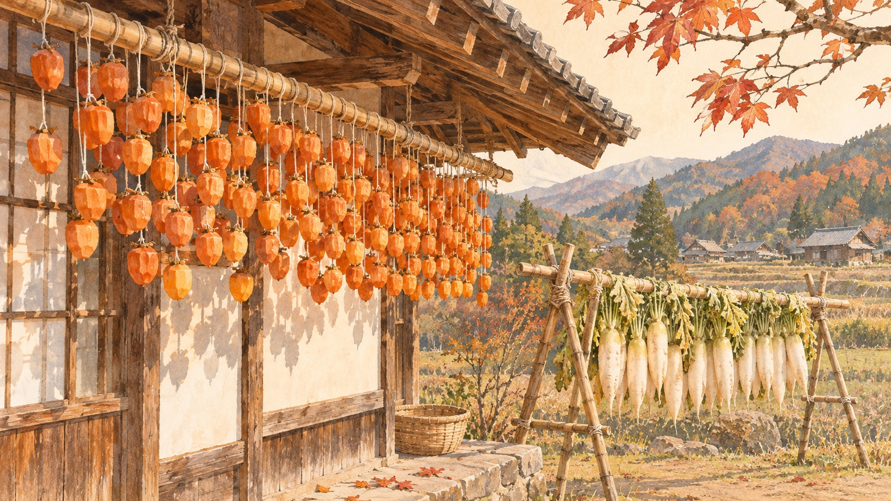
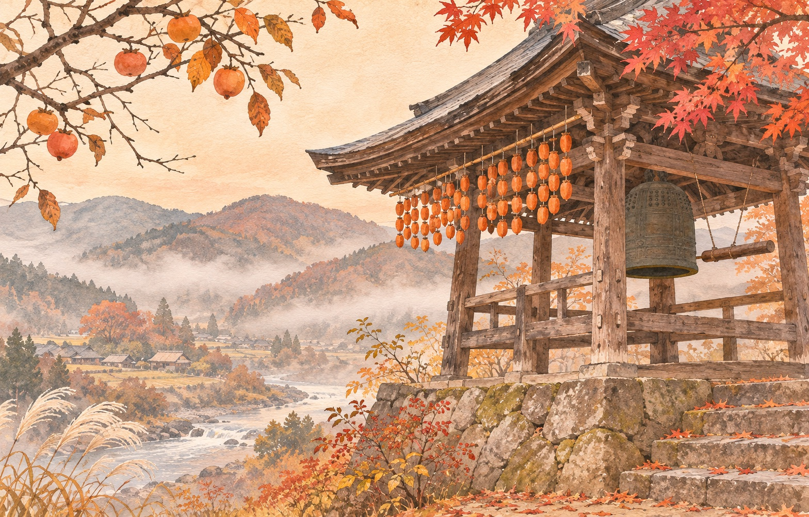
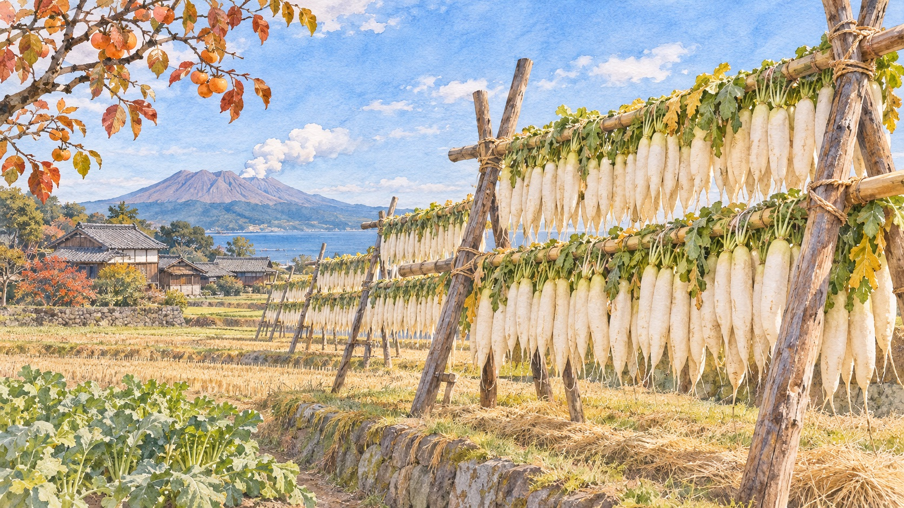

Late October to February · Nagano · Yamagata · Chiba · Shizuoka · Miyazaki
Japan's other autumn colours are hung out to dry — and each one only lasts a few weeks.
You have already done the maples: Tōfukuji at opening time, the Arashiyama crowds, a lit-up garden at night. This is the season that comes straight after, when farm towns hang persimmons and radishes out in the cold wind. It isn't a sight anyone puts on a schedule. It is a working process, and it's over in a month.

If you have seen photos of orange persimmon curtains, they were almost certainly taken in the "Kushigaki Village" of Katsuragi (かつらぎ町) in Wakayama, which already has good coverage in English. This piece is about the places that don't: a valley in Nagano where the curtain is now kept up on purpose at a temple, a hot-spring town in Yamagata with its own persimmon from 1748, one farmer in suburban Chiba, and the radish towers of the far south.
What they have in common is the reason they exist. Persimmons that are too astringent to eat fresh turn sweet when you peel them and hang them in cold, dry wind. Radishes do the same thing on their way to becoming takuan pickles. The calendar is set by the harvest and the wind. Nobody organises it for visitors, so it doesn't run on any festival date.
Takamori (高森町) sits on the slopes above the Tenryū River (天竜川) in the south of Nagano. It calls itself the birthplace of the Ichida persimmon (市田柿, Ichida-gaki), named after the old village of Shimo-Ichida. Nagano makes more dried persimmon than any other prefecture, and Ichida-gaki account for over 95% of it. In 2016 it was registered as a Geographical Indication, the same kind of protection as a regional wine.
Two things make the valley good at this. The first is a big swing between day and night temperatures. The second is the river. Fruit is picked and peeled from late October to mid-November and then hangs for about a month. During those weeks, fog rises off the Tenryū in the mornings and settles over the drying sheds. Local producers credit that fog with the chewy, moist texture that sets Ichida-gaki apart from harder dried fruit.
The surprise is what you won't see. The commercial crop no longer hangs from house eaves. A Nagano Prefecture landscape document notes that, out of food-hygiene concerns, persimmons going to market are now dried indoors. The open-air kaki-sudare (柿すだれ, persimmon curtain) that used to cover farmhouse walls has mostly gone from public view.

Walk up behind the temple to the castle ruins (松岡城址, Matsuoka-jō-shi), a grassy hilltop with a view down over the farmland along the Tenryū. If you get there early on a cold morning, the river fog that makes the fruit is right below you.
Kaminoyama (上山) is a hot-spring town at the foot of Zaō. It has its own persimmon, the benigaki (紅柿, "crimson persimmon"), and an unusually exact origin for it. In 1748 an astringent tree came up by itself in the garden of the Kawaguchi family in what was then Kami-Sekine village. By the Tenpō era (1830s) the fruit was known by the village name, Sekine-gaki. A tree said to be its second or third generation still stands in the family's back garden.
Benigaki is too astringent to eat fresh. It is hung differently from the Nagano fruit: each peeled persimmon is tied by its stem to a string at a T-shaped cut of branch. Then it is left in the Zaō oroshi (蔵王おろし), the cold wind that comes down off the snow-capped mountain. Some households still make their own. Most visitors only see the result: small dried fruit, strung together, sold in boxes of 32 as a winter gift and chopped into kaki-namasu for New Year.
The ancestral tree is in a private garden, not a public monument. Don't go looking for it. What's worth doing is coming for the onsen in late November and buying benigaki in December, when the fruit reaches shops.
This one is just outside Tokyo, in Chiba, and in English it doesn't exist. Funabashi City's own magazine described a sight that turns up for a few weeks each year in a residential part of town: thousands of white radishes laid out to dry among the houses.
They belong to one man, Saitō Masato (齋藤正人), of Saitō Farm in Ōana-kita (大穴北). By the city's account, he has made them every year for more than fifty years. He started because people in the new housing estates going up nearby wanted radishes to pickle themselves. He is now the only farmer in the area who still does it. That year he started on 20 November and planned to sell until about 10 December. He makes around 3,000 a year, of a variety called Shin-hasshū (新八洲), known as a "white-neck" radish because the whole root stays white. He washes them by hand one at a time because they are too long for the machine. Then he lays them out in rows, spaced apart, and moves them every day for a week to ten days.
Most of his buyers are repeat customers who take dozens at a time and pickle them at home. The pickles last until early spring. This is the radish wall at the scale of a single family and a neighbourhood that still asks for it.
If you have been to Hakone, you have already driven past this. The western slopes below the Hakone range, on the Mishima side, are farmland on volcanic red loam. They sell vegetables under their own brand, Hakone-seiroku Mishima Yasai (箱根西麓三島野菜). Daikon has been grown here for a long time. Hanging the harvest on frames to dry has been the sign of winter's arrival for over a hundred years. Shizuoka Prefecture's landscape plan lists radish drying as part of what makes this hillside worth protecting. The same plan stresses respect for the farming that goes on there.
The co-op, JA Fuji-Izu, ran a Mishima Daikon Festival (三嶋大根祭り) on 20 December 2025. That is the only firm date I could find. The fields themselves have no fixed viewing point.
In the far south the radish wall becomes architecture. In Tano (田野) and Kiyotake (清武), in Miyazaki City, farmers build bamboo frames called daikon yagura in November. They start hanging radishes when the harvest begins in early December and keep going until late February. The frames are about 6 metres high, 50 metres wide and around ten tiers deep. In peak season there can be up to 300 of them. The radishes hang in the cold wind off Mt. Wanitsuka for 10 to 15 days and shrink to about half their size. Then they go off to be pickled. Miyazaki makes more pickled daikon than anywhere else in Japan, and the method was named a Japanese Nationally Important Agricultural Heritage System in February 2021.

Across the border in Kinkō (錦江町), Kagoshima, the towers in the Shukuribaru (宿利原) area go up from mid-November. Some reach 7 metres high and 50 metres long. Both places have run night light-ups in recent winters, Tano for several weeks and Kinkō for a few nights before Christmas. The dates change every year.
One phrase covers every stop on this list. Use it before you lift a camera at any farm:
None of this has a schedule you can book. The harvest and the weather set the dates. A warm November can push everything back a week, and a rainy one can mean racks under tarps. Takamori's curtain, the Funabashi rows and the Mishima frames have no published start date that I could find.
The most photogenic version is often a re-creation. Commercial Ichida persimmons are dried indoors now. The temple curtain is a deliberate reminder of the old way, not a glimpse into a farmhouse.
These are workplaces. Every source on the radish towers asks visitors to watch from the public road. Mishima's own landscape plan says the same. If someone is working, ask before you photograph, and accept a no.
The distances are real. Takamori is about four hours from Tokyo by bus for a temple bell tower and a view. Miyazaki and Kagoshima are flights. If you only have a free afternoon near Tokyo, the realistic choices are Funabashi (if it is still running) and Mishima (with no fixed spot). Both are thin on certainty.
Who should skip this: anyone who needs a guaranteed sight. This trip is for someone who would rather catch one real week of a working year than see something staged for them every day.
Takamori from Tokyo, any day in the second half of November. Bus times are from a 2026 timetable. Check before booking.